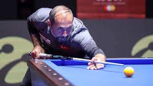
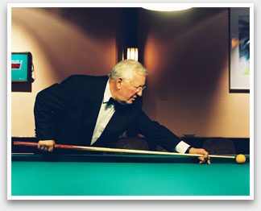
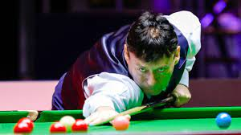

Şimdi ise bilardoda başarılı bazı insanlara göz atalım.

Antalya'da yaşayan Nazlıcan Uysal, 4 yaşında ailesinin yönlendirmesiyle yüzme sporuna başladı. Küçük yaşta ulusal müsabakalarda derece elde eden Nazlıcan, 3 yıl önce farklı branşlarda başarılı olma düşüncesiyle spor hayatında değişiklik yapmaya karar verdi. Antalyaspor Sutopu Takımı'nda antrenman yapan Nazlıcan, kırmızı beyazlı takımla müsabakalarda oynadı.
Başarısıyla dikkati çeken Nazlıcan, bu yıl 17 yaş altı milli takımının Bulgatistan'da Botev Days Uluslararası Sutopu Turnuvası'nda forma giydi. Burada milli takımla ikincilik kazanan Nazlıcan, 19 yaş altı milli takımına seçildi.

Belçika doğumlu ve 81 yaşında olan Raymond Ceulemans, dünyaca ünlü bilardocular arasında en üst sıralarda yer almaktadır. 3-Bant oyuncusu olan Raymond Ceulemans 35 kez dünya şampiyonu, 48 kez Avrupa ve 61 kez Belçika şampiyonu olmuştur. Oyuncu, bilardo dünyasında ”Mr 100” lakabı ile bilinmektedir.

Dünyaca ünlü bilardocular söz konusu olduğunda adı mutlaka geçecek olan oyunculardan biri de Jimmy White’tır. Porfesyonel bir snooker oyuncusu olan White, adını 1980’li yıllarda duyurmaya başlamıştır. Birçok dünya şampiyonluğu bulunan Jimmy White, 18 yaşındayken Dünya Amatör Snooker Şampiyonasını birincilikle tamamlamıştır. White, bilardo camiasında ”Whirlwind” lakabıyla anılmaktadır.